反射机制
反射机制
什么是反射机制
反射机制是在运行时，对于任意一个类，都能够知道这个类的所有属性和方法；对于任意个对象，都能够调用它的任意一个方法。在java中，只要给定类的名字，就可以通过反射机制来获得类的所有信息。 这种动态获取的信息以及动态调用对象的方法的功能称为Java语言的反射机制。
哪里用过反射
- jdbc就是典型的反射
1 | |
spring的IOC
spring的IOC特性，维护了一个beans.xml 里面配置了每个类的class全路径，就是通过反射机制构造的
hibernate，struts等框架使用反射实现的。
反射的实现方式
第一步：获取Class对象，有4中方法：
- Class.forName(“类的路径”)；
- 类名.class
- 对象名.getClass()
- 基本类型的包装类，可以调用包装类的Type属性来获得该包装类的Class对象
实现Java反射的类
Class：表示正在运行的Java应用程序中的类和接口
注意： 所有获取对象的信息都需要Class类来实现。
Field：提供有关类和接口的属性信息，以及对它的动态访问权限。
Constructor：提供关于类的单个构造方法的信息以及它的访问权限
Method：提供类或接口中某个方法的信息
反射机制的优缺点
优点：
- 能够运行时动态获取类的实例，提高灵活性；
缺点：
- 使用反射性能较低，需要解析字节码，将内存中的对象进行解析。
- 相对不安全，破坏了封装性（因为通过反射可以获得私有方法和属性）
解决方案：
- 通过setAccessible(true)关闭JDK的安全检查来提升反射速度；
- 多次创建一个类的实例时，有缓存会快很多
- ReflflectASM工具类，通过字节码生成的方式加快反射速度
反射使用步骤
获取Class对象，调用对象方法
- 获取想要操作的类的 Class 对象，他是反射的核心，通过 Class 对象我们可以任意调用类的方法。
- 调用 Class 类中的方法，既就是反射的使用阶段。
- 使用反射 API 来操作这些信息。
获取class对象的几种方法
通过一个对象调用getClass方法
1
2Person p = new Person();
Class c = p.getClacc();通过调用某个类的class属性来获取该类对应的Class对象
使用Class类的静态方法forName()方法(最安全性能最好)，当我们获得了我们想要的类的Class对象后，可以通过Class类中的方法获取并查看该类中的方法和属性。
- 获取方法：getDeclaredMethods()
- 获取字段：getDeclaredFileds()
- 获取构造方法：getDeclaredConstructors();
利用反射动态创建对象实例
使用Class对象的newInstance()方法来创建该class对象对应类的实例，但是这种方式会要求该class对象对应的类有默认的空构造器。
先使用class对象获取指定的constructor对象，在调用constructor的newInstance方法
1
2Constructor c = class.getDeclaredConstructor(String.class,Integer.class);
Person p = c.newInstance("zahngsan",18);
反射相关的API
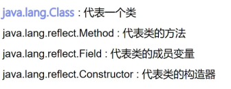
一个类在内存中只有一个class对象，一个类在被加载后，类得整个结构都会被封装在Class对象中。
Class类
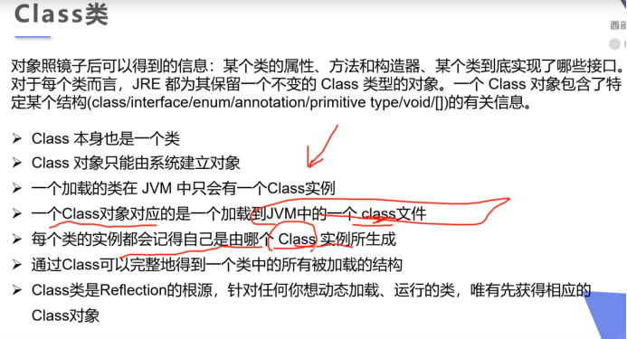
Class类的常用方法
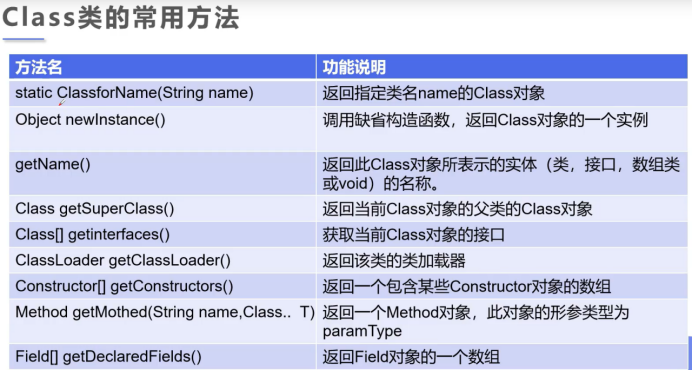
获取class类的实例
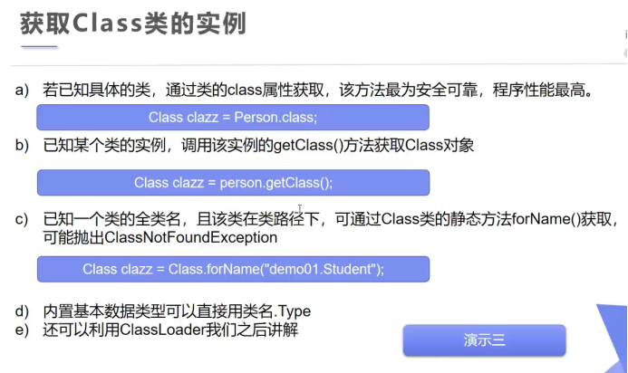
Java内存分析
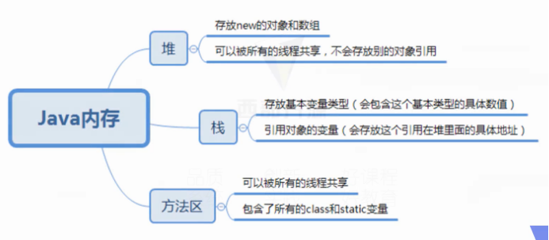
类的加载过程
当程序主动使用某个类时，如果该类还未加载到内存，则系统会通过如下三个步骤对该类进行初始化。
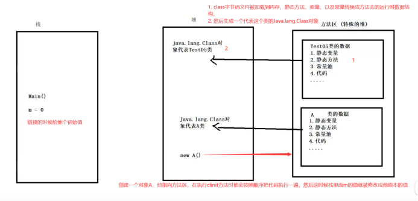
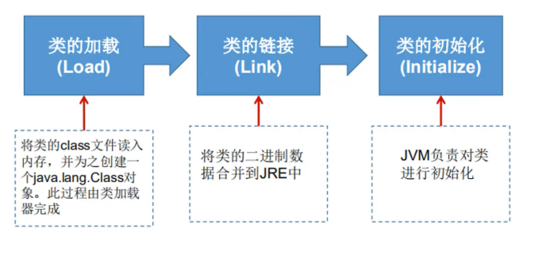
类的加载与ClassLoader的理解
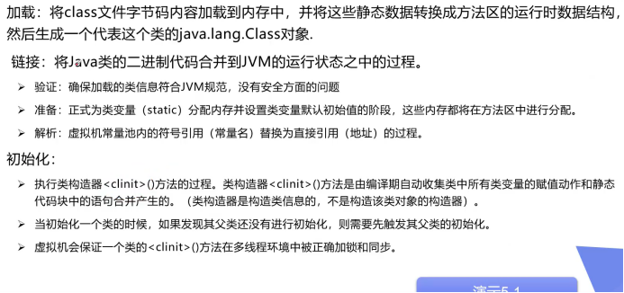
什么时候会发生类的初始化

通过反设调用方法
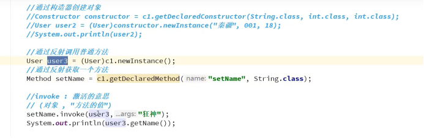
通过反射操作属性
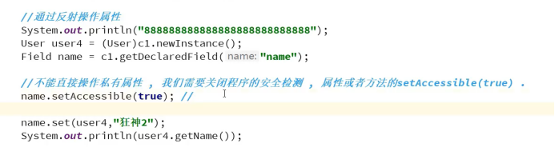
SetAccessible
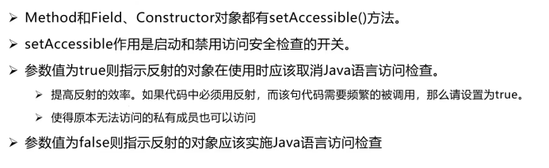
本博客所有文章除特别声明外，均采用 CC BY-SA 4.0 协议 ，转载请注明出处！